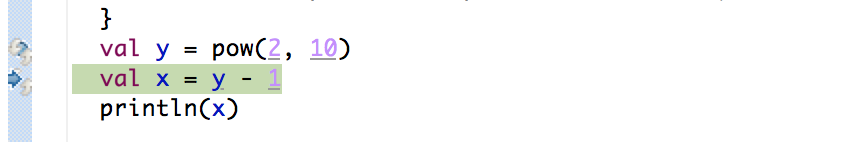
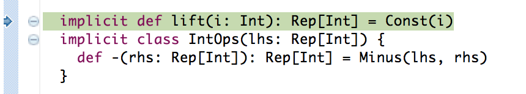
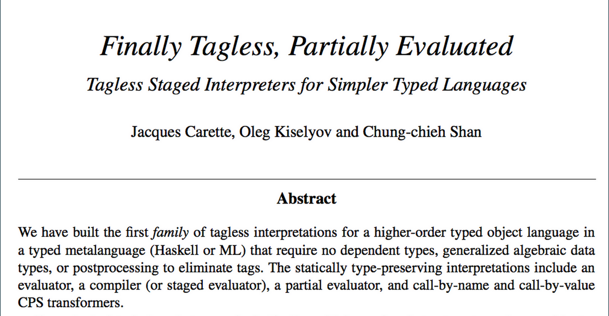

Yin-Yang
Programming DSLs Made Simple
By Vojin Jovanovic / @vojjov
Domain-Specific Programming Language
Programming language restricted to a narrow domain in order to improve both productivity and performance.
Example: Standard Query Language
SELECT name, email
FROM gmail_accounts as m, github_account as g
WHERE m.username = g.username
AND prog_language = "Scala"
AND lang_level > 30
SQL: Domain Knowledge
Rewrites can change performance by a factor of 1000:
- $R \bowtie S = S \bowtie R$
- $(R \bowtie S) \bowtie T = R \bowtie (S \bowtie T)$
A DSL should be:
- User Friendly
- Fast
Meet the DSL User
However, a DSL author should:
- Implement a parser
- Implement a typechecker
- Implement a debugger
- Provide IDE integration
Meet the DSL Authors
Embedded Domain-Specific Languages
Use an existing general purpose host language to embed a DSL.
Direct Embedding
Values in the embedded language are directly represented by the values in the host language.
Direct Embedding - Low Performance
Large abstraction overhead. Example the Scala collections:
val v1 = Seq(1,2,3)
val v2 = Seq(4,5,6)
val sum = (v1 zip v2) map { case (x, y) => x + y }
val (min, max) = (sum.max, sum.min)
Deep Embedding
Values in the embedded language are symbolically represented by the values in the host language.
// symbolic representation
trait Rep[T]
case class Const(v: Int) extends Rep[Int]
case class Minus(l: Rep[Int], r: Rep[Int]) extends Rep[Int]
// lifting
implicit def lift(i: Int): Rep[Int] = Const(i)
implicit class IntOps(l: Rep[Int]) {
def -(r: Rep[Int]): Rep[Int] = Minus(l, r)
}
val y: Rep[Int] = 1024
val x: Rep[Int] = y - 1
println(x)
Deep Embedding - Troubles Debugging
 Deep Embedding - Cryptic Type Errors
Query(Coffees).map(c =>
if(c.origin == "CH")
"Good"
else
c.quality
)
- Don’t know how to unpack Any to T and pack to G
- Not enough arguments for method map: (implicit shape: scala.ql.lifted.Shape[Any,T,G]):scala.slick.lifted.Query[G,T]
Direct Embedding vs. Deep Embedding
| Deep | Direct | |
|---|---|---|
| Friendly | X | ✓ |
| Fast | ✓ | X |
Insight
User friendliness matters during program development.
Performance matters in production.
Automatically translate a friendly direct embedding to a fast deep embedding before deployment!
Automatic Translation

Spot the difference
Behind the Scenes
| Direct | Deep |
|---|---|
| |
The Core Translation
Language Virtualization
| Direct | Deep | |
|---|---|---|
| Language Constructs | ||
| if(c) t else e | __if(c, t, e) | |
| while(c) b | __while(c, b) | |
AnyRef Methods |
||
| x.hashCode | infix_hashCode(x) | |
| a == b | infix_==(a, b) |
DSL Intrinsification
Converts DSL intrinsics from the direct embedding into their deep counterparts.
Operation Translation
- Injects the whole program into the DSL component
- Replaces prefixes with
this
| Direct | Deep |
|---|---|
| |
Constants and Captured Variables
def lift[T, Ret](v: T)
(implicit liftEv: LiftEvidence[T, Ret]): Ret =
liftEv.lift(v)
new QueryDSL {
this.Query(Coffees).map(c =>
if(c.origin == "CH")
"Good"
else
c.quality
)
}
Type Translation: Generic Embedding
\[\begin{aligned} &\tau(T, \mathtt{targ}) & = & \; T \\ &\tau(T, \mathtt{other}) & = & \; Rep [ T ] \end{aligned}\]
Type Translation: Automatic Inlining
\[\begin{aligned} &\tau(T_1 \Rightarrow T_2, \mathtt{targ}) &=& \; \mathtt{error} \\ &\tau(T_1 \Rightarrow T_2, \mathtt{other}) & = & \; \tau(T_1,\mathtt{other}) \Rightarrow \tau(T_2,\mathtt{other}) \\ &\tau(T, \mathtt{targ}) & = & \; T \\ &\tau(T, \mathtt{other}) & = & \; Rep[T] \end{aligned}\]
Correctness

Language Restriction Analysis
Direct embedding API can be richer than the deep embedding.
new QueryDSL {
this.Query(lift(Coffees)).map { c: Column[T] =>
if(c.origin == lift("CH")) {
lift("Good")
} else
c.quality
}
}
Language Restriction
Check if the direct embedding complies with the deep embedding in a fine-grained way and report comprehensible error messages.
new QueryDSL {
this.Predef.println(().asInstanceOf[Rep[String]])
}
DSL User View
query {
Query(Coffees).map(c =>
if(c.origin == "CH")
"Good"
else
c.quality
)
}
DSL Author View
object YYTransformer {
def apply[C <: Context, T](c: C)(
dslName: String,
tpeTransformer: TypeTransformer[c.type],
config: Map[String, Any] = Map()) = ...
}
def query[T](block: => T): T = macro _query[T]
def _query[T](c: Context)(block: c.Expr[T]): c.Expr[T] =
YYTransformer[c.type, T](c)(
"slick.Query",
new RepTransformer[c.type](c))(block)
Experiment: Slick Front-End
Slick
Compiles functional programs into efficient SQL. Existing deep embedding based on Rep types.
New interface
class Query[T] {
def length: Int = ???
def map[S](projection: T => S): Query[S] = ???
def filter(projection: T => Boolean): Query[T] = ???
def withFilter(projection: T => Boolean): Query[T] = ???
def flatMap[S](projection: T => Query[S]): Query[S] = ???
// ...
def groupBy[S](f: T => S): Query[(S, Query[T])] = ???
def innerJoin[S](q2: Query[S]): JoinQuery[T, S] = ???
def leftJoin[S](q2: Query[S]): JoinQuery[T, S] = ???
def rightJoin[S](q2: Query[S]): JoinQuery[T, S] = ???
def outerJoin[S](q2: Query[S]): JoinQuery[T, S] = ???
}
Wrapper
trait QueryOps[T] { self: YYQuery[T] =>
def withFilter(p: YYRep[T] => YYRep[Boolean]): YYQuery[T] =
filter(p)
def flatMap[S](p: YYRep[T] => YYQuery[S]): YYQuery[S] =
YYQuery.fromQuery(query flatMap { (x: Rep[T]) =>
p(YYValue[T, E](x)).query
})
}
Implementation
- 2 months of development
- ~1000 lines of code
- 50+ tests are passing
What about constructing a new DSL?
Deep Embedding Generation
object BigDecimal {
def apply(s: String): BigDecimal =
new BigDecimal(new JBigDecimal(s))
}
class BigDecimal(val v: JBigDecimal) {
def +(lhs: BigDecimal): BigDecimal =
new BigDecimal(v.add(lhs.v))
def *(lhs: BigDecimal): BigDecimal =
new BigDecimal(v.multiply(lhs.v))
}
Generating an Interface
trait BigDecimalOps extends Base with OverloadHack {
object BigDecimal {
def apply(s: Rep[String]): Rep[BigDecimal] = // ...
}
implicit class BigDecimalRep(self: Rep[BigDecimal]) {
def +(lhs: Rep[BigDecimal]): Rep[BigDecimal] = // ...
def *(lhs: Rep[BigDecimal]): Rep[BigDecimal] = // ...
}
}
Generate an Intermediate Representation
trait BigDecimalExp extends BigDecimalOps with BaseExp {
// case classes
case class BigDecimalNew
(v: Rep[BigDecimal]) extends Def[BigDecimal]
case class BigDecimal$plus
(self: Rep[BigDecimal], lhs: Rep[BigDecimal]) extends Def[BigDecimal]
case class BigDecimal$times
(self: Rep[BigDecimal], lhs: Rep[BigDecimal]) extends Def[BigDecimal]
case class Apply(s: Rep[String]) extends Def[BigDecimal]
// ...
}
Generate Code Generation
override def emitNode(sym: Sym[Any], node: Def[Any]): Unit = node match {
case BigDecimalNew(v) =>
stream.print("val " + quote(sym) + " = new BigDecimal")
stream.print("(")
stream.print(quote(v))
stream.print(")")
stream.println("")
// ...
}
And Finally
trait BigDecimalExpOpt extends BigDecimalExp {
override def bigDecimal$plus
(self: Rep[BigDecimal], lhs: Rep[BigDecimal]): Rep[BigDecimal] = {
/* please add optimizations here */
super.bigDecimal$plus(self, lhs)
}
override def bigDecimal$times
(self: Rep[BigDecimal], lhs: Rep[BigDecimal]): Rep[BigDecimal] = {
/* please add optimizations here */
super.bigDecimal$times(self, lhs)
}
// ...
}
Demo
Takeaways
Easier to program DSLs for both DSL users and DSL authors.Are we there yet?
The team behind Yin-Yang:
- Vojin Jovanovic
- Sandro Stucki
- Amir Shaikhha
- Vladimir Nikolaev
- Vera Salvisberg
THE END
Yin-Yang / http://github.com/vjovanov/yin-yang
By Vojin Jovanovic / @vojjov